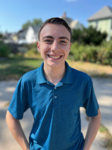

I am Dylan Fisk, an undergraduate English major at UMass-Amherst in the Professional Writing and Technical Communication certificate program and the Creative Writing concentration. I also work as a tutor intern in the UMass Writing Center, helping me be exposed to more unique kinds of writing. Through refining my own writing and experiencing the writing of others, I hope to prepare myself for a fruitful career in writing or editing.
Writing has always been a great asset for me, especially in its ability to express my faith and give form to my feelings, and my time at UMass-Amherst has been but the start of my long journey with it. It is there that I am able to experiment with both the creative writing I am passionate about and the technical writing I am eager to learn. Though a poet at heart, I am interested in every facet of writing and the writing process. In immersing myself in multiple distinct genres, I am hoping to become a versatile word-slinger. I have already been able to produce a creative writing portfolio and multiple pieces of professional writing from my courses.
Being a tutor in UMass' writing center has been such a privilege for me as well, as it gives me the chance to combine my love of writing with my desire to help others. I have already been exposed to pieces from many different disciplines and dialects, and in so doing, my passion and knowledge of writing has continued to grow.
In the future, I would love to pursue a career that continues to align with this intersection of writing and serving others. I value writing's versatility, so I do not have a concrete field chosen quite yet, but honing my skills at UMass will help qualify me for any writing, editing, or teaching position I feel called to!
To learn more about my professional experiences, check out my LinkedIn.
Feel free to shoot me an email if you want to get in contact with me!